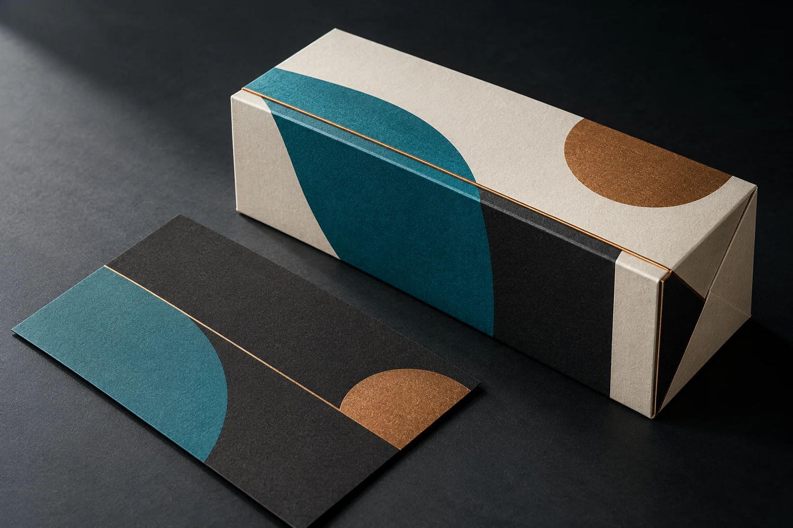
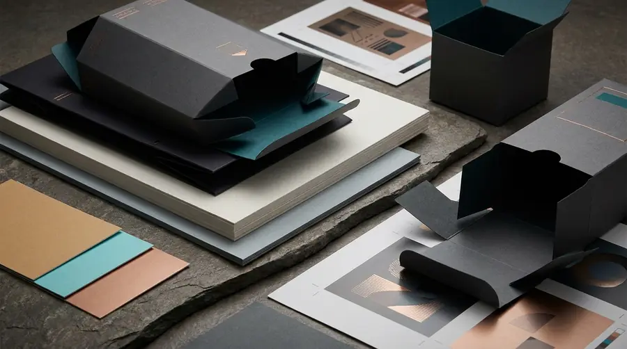

MACHINE GUIDE / OFFSET LITHOGRAPHY
Offset Lithography Press
Sheetfed commercial printing for paper and board applications where format, stock and production scope are defined.

WHAT THE SYSTEM DOES
Understand the machine before choosing the route.
Offset lithography transfers ink through plate and blanket systems before the image reaches the paper or board sheet.
- Best-considered applicationsPackaging, folding cartons, stationery, brochures, inserts, menus and other commercial printed matter.
- Material / surface contextPaper and paperboard stocks selected according to the job, print requirement and finishing route.
- Validation boundaryStock, sheet format, artwork, colour requirements, finishing and quantity must be confirmed before production. HDC does not publish unsupported machine-capacity claims.

PRODUCTION SEQUENCE01–03
Prepare the press route and production files
Print, inspect registration and release for finishing
RELATED COMMERCIAL ROUTE
PACKAGING & COMMERCIAL PRINT
The machine is a production tool. The customer-facing service is selected from the actual application, material, quantity and finish requirements.
Explore related servicePROJECT ENQUIRY
Bring us the surface.
Share the object or substrate, dimensions, quantity, artwork status and required date. HDC will confirm the appropriate production route after review.
Request a quote